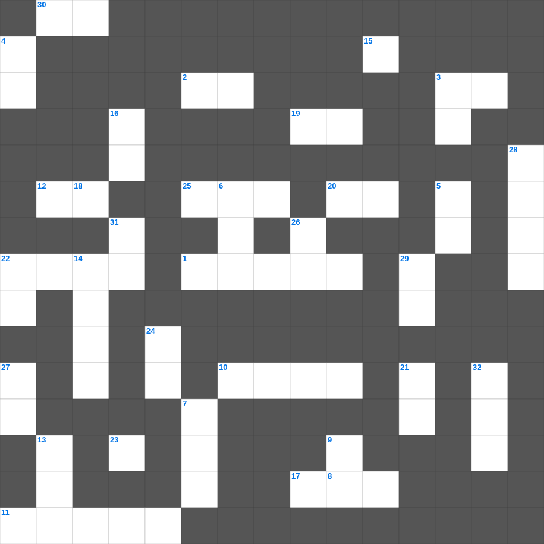

민수기 마스터 100
📌 서비스 정의
십자가로세로는 교회 주보와 주일학교에서 사용할 수 있는 성경 기반 가로세로 퍼즐 서비스입니다. 성경 인물, 사건, 핵심 구절을 바탕으로 제작되었습니다. 온라인 풀이 및 인쇄 기능을 제공합니다.
📖 민수기란?
민수기는 시내산을 출발한 이스라엘이 가나안 입성 직전까지 겪은 광야 40년의 여정을 기록합니다. 인구 조사, 지파별 역할, 불순종과 심판, 그리고 새 세대의 준비가 핵심 내용입니다. 총 36장입니다.
📚 민수기의 주요 사건·주제
두 차례의 인구 조사 · 열두 정탐꾼 사건 · 고라의 반역 · 발람과 발락 이야기 · 모압 평지의 마지막 준비
무료로 즐기는 민수기 민수기 주일학교 퀴즈! 35개의 힌트로 구성된 가로세로 낱말 퍼즐입니다. PC와 모바일 모두 지원되며, 정답을 바로 확인할 수 있어 혼자서도 쉽게 풀 수 있습니다.

📝 가로 힌트
1. 베드로전서에서 언급된 '심판이 시작될 곳'
2. 이러한 지혜는 위로부터 내려온 것이 아니요 세상적이요 정욕적이요 이것적이니
3. 부활하신 주님이 제자들에게 숨을 내쉬며 가라사대 이것을 받으라
8. 내가 이것을 부끄러워하지 아니하노니 이 이것은 모든 믿는 자에게 구원을 주시는 하나님의 능력이 됨이라
10. 나오미와 룻이 돌아온 고향 성읍
11. 흰 옷을 입은 한 청년이 이르되 놀라지 말라 너희가 십자가에 못 박히신 나사렛 예수를 찾는구나 그가 이것 하셨고
12. 빌닷이 말한 악인의 운명 '그의 이것은 꺼지고 불꽃은 빛나지 않을 것이라'
15. 겨자씨 비유: 모든 씨보다 작으나 심긴 후에는 자라서 모든 이것보다 커지며
17. 에스더가 세 번째로 왕 앞에 나아갈 때 입은 것
19. 오직 그의 긍휼하심을 따라 중생의 이것과 성령의 새롭게 하심으로 하셨나니
20. 도리어 사랑으로써 이것하노라 나이가 많은 나 바울은 지금 또 예수 그리스도를 위하여 갇힌 자 되어
22. 아브라함이 이삭을 번제로 드리려 한 산
25. 모세의 장인, 미디안 제사장
30. 예수께서 나실 때 가이사 아구스도가 내린 명령
📝 세로 힌트
3. 중생의 씻음과 이것의 새롭게 하심
4. 유다서 1장 11절: 불의의 삯을 사랑한 구약 인물
5. 생명을 사랑하고 좋은 날 보기를 원하는 자는 혀를 금하며 이것 입술로 거짓을 말하지 말고
6. 지으신 것이 하나도 그 앞에 나타나지 않음이 없고 우리의 결산을 받으실 이의 눈 앞에 만물이 벌거벗은 것 같이 이것느니라
7. 왕이 잔치를 베푼 도성 이름
8. 여호와를 자기 하나님으로 삼는 백성은 이것이 있도다
9. 아이 성을 점령할 때 사용한 전략
13. 빌레몬서의 수신인 중 여성으로 추측되는 인물
14. 노아의 방주가 머문 산
16. 느헤미야가 이방 여인과 결혼한 자들에게 내린 벌 중 하나
18. 광야에서 구름 기둥과 이것 기둥으로 인도하심
21. 오네시모의 신분은 무엇이었나
22. 나오미의 가족이 흉년을 피해 이주한 땅
23. 제2계명 '우상을 만들지 말고 그것들에게 이것하지 말라'
24. 인구 조사 대상 '이십 세 이상으로 이것에 나갈 만한 자'
26. 헤롯의 누룩과 바리새인들의 누룩을 이것하라
27. 너희 중에 지혜와 총명이 있는 자가 누구냐 그는 선행으로 말미암아 지혜의 이것함으로 그 행함을 보일지니라
28. 다윗이 예루살렘에서 다스린 기간
29. 내일 일을 너희가 알지 못하는도다 너희 생명이 무엇이냐 너희는 잠시 보이다가 없어지는 이것이니라
31. 그가 만일 네게 불의를 하였거나 네게 빚진 것이 있으면 그것을 내 앞으로 이것하라
🧩 이 퍼즐에서 배우는 내용
이 퍼즐은 민수기 마스터 100의 핵심 단어와 개념을 자연스럽게 복습할 수 있도록 구성되었습니다. 주일학교 수업이나 개인 성경공부에서 학습 내용을 점검하는 용도로 바로 활용할 수 있습니다.
🧑🏫 교회 교육 자료 활용
이 퍼즐은 주일학교 교재 추천 자료로 활용할 수 있고, 주일학교 주보에 넣기 좋은 분량으로 구성되어 있습니다. 수업용 주일학교 교안에 활동지로 붙이거나, 예배 후 복습용 주일학교 공과교재로 바로 사용할 수 있습니다.
🏷️ 키워드
민수기 주일학교 퀴즈, 민수기, 십자가로세로, 성경퀴즈, 말씀퀴즈, 가로세로퍼즐, 주일학교 교재 추천, 주일학교 주보, 주일학교 교안, 주일학교 공과교재